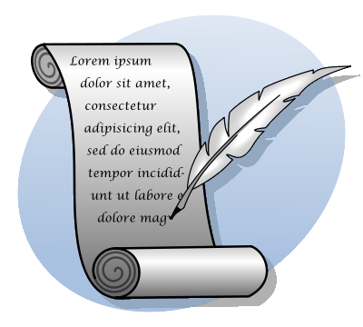

Notes on Writing

Texts on writing
For general writing guidelines, American editors use Strunk and White’s little Elements of Style. It is not a book that you read an put away; it is something you read, read again, and again, and again—
in small pieces. An old, used third edition is fine, later editions than that do not improve on it. If you need a verbose description that focuses on technical/computer issues, too, look for Bugs in Writing.
Basic Evaluation Rules for a Memo/Essay
units of writing (2) Every unit of writing comes with a thesis and support of the thesis. For example, an essay’s first paragraph states the essay’s thesis and (often implicitly) sets up the remaining paragraphs with key words and phrases. Each remaining paragraph’s first sentence can then state a thesis in terms of these words. The remaining sentences in turn support the paragraph’s thesis with examples, illustrations, abstract and logical arguments.
flow and style (3) Within a paragraph, all sentences belong to one theme and connect to each other. On occasion, this connection may use fill words such as "in addition" or "similarly." In general, with content- and even word-based connection. Such connections end a sentence in an idea/word that the following sentence picks up near the beginning. The second sentence leas from there to the next idea/key word.
When someone requests a description of an object—
concrete or abstract— avoid subjective language. In a technical context, avoid flowery or poetic language, though sparsely used exceptions often work well. Also, avoid the use of future tense in descriptions. When you describe an object in the hear and now, the description states an eternal truths, fixed in time and space. An exception is a description of (possible) future developments of an evolving object. grammatical mistakes and typos (3)
Just one note here: Do not use contractions; it is too easy to make mistakes that way, e.g., the misuse of "it’s" as a possessive. Learn from Ms. Biron’s feedback.
content (2) In the context of programming languages, the word "power" has one specific meaning that is almost never useful. According to Alan Turing and Alonzo Church (two early computer scientists), all programming languages have approximately the same power, which basically means that they can compute the same set of functions on numbers that Turing machines or the Lambda Calculus over numbers can compute. In a technical paper, I explain that/how this meaning is irrelevant for programmers and that one could use other means to compare languages. While my kind of comparison comes closer to the eternally-mentioned, never-explained idea of "expressive power of my language," it fails to match the modern perception, which also includes libraries, frameworks, supported platforms, implementations, IDES, and even elements o the tool chain. Stick to the suggested topic. Understand what the subject is about. Know your words and terminology. The same is true for ideas. Make sure you understand an idea/word/term before you use it.
When you are asked to describe the most distinguishing feature of your favorite object, do not describe how it has changed the world’s history. Instead, focus on objective properties. In the specific case, your favorite languages may support classes, objects, and first-class, higher-order functions. It may also come with a wealth of frameworks and libraries. Or its implementation may sport a read-eval-print loop, like Lisp languages have since 1958. All of these are features of the language and its eco-system. Now contrast such features with properties of the language such as "readable" or "productive" or "powerful." Such adjectives are clearly subjective and judge the language from your personal perspective. Whether someone else agrees with these attributions is open. See the course announcements for "red" and "beautiful."
A Sample Solution for Homework 1
Racket, a Programming-Languages Programming Language
Matthias Felleisen, matthias at ccs.neu.edu
The Racket programming language supports a language-oriented form of problem solving.Set up the content w/o wasting space on details. It achieves this novel with three innovations: a highly expressive syntax extension system, powerful software contracts, and the linguistic internalization of systems-programming idioms.
Racket’s syntax system acknowledges the idea that every problem area deserves its own language. Using Racket, a programmer can quickly create a language that, at a minimum, allows the expression of solutions in terms accessible to experts in the problem domain or, even better, allows them to describe problems and thus to abstract over a range of possible solutions. Systems in Racket compose communicating software components, with each component formulated in the most appropriate domain-specific language.
When software systems consists of multi-lingual collections of Connect paragraph, via ideas and words. components, their communications must respect the invariants of each and every domain-specific language used. When a value flows from one component written in language L to a component that uses language L2, it must be protected from operations in the latter that may violate its integrity. Racket’s innovative higher-order contract system can implement such protection mechanisms and, when violations do occur, can point directly to the guilty party. One prime example of this form of integration is Racket and Typed Racket, the world’s first gradually typed programming language.
Many problem domainsHark back to paragraph 1 call for dynamic solutions, i.e., processes that dynamically load programs from potentially unknown sources. For such systems, a language must support the safe and secure administration of resources, and to this end, Racket internalizes systems-level idioms via linguistic features. Using theseLink sentences via words end-to-front. features, Racket system can track the resource consumption (file handles, network ports, database connections, etc) of dynamically loaded code in a fine-grained fashion and, when such codes crash, the system can release the resources with a single instruction.
In sum, Racket is a full-spectrum language that is one of the first to implement a problem-facing programming strategy.